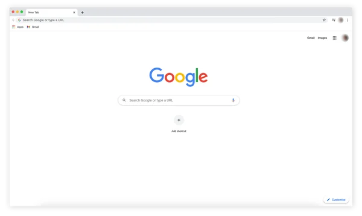
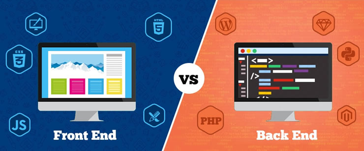
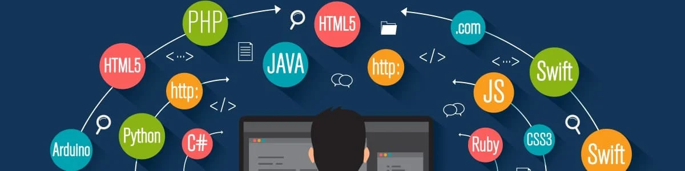

JavaScript1 - A importância de JavaScript em navegadores
O que são os navegadores
Você já deve ter utilizado um navegador para acessar um site. Por exemplo, agora mesmo, você está lendo esse conteúdo em um link através de um navegador. Mas você sabe o que é um navegador? Os navegadores são softwares que servem para acessar páginas da internet escritas em HTML.
Antigamente, os sites não interagiam muito com o usuário. Eles eram estáticos e, quando tinham alguma interação, demoravam para enviar uma resposta. Já imaginou? Em Old Web Today você pode ver como os sites eram em diferentes navegadores. A linguagem JavaScript foi desenvolvida para facilitar a comunicação e a interação, deixando a navegação mais rápida e fácil.
JavaScript no navegador
Uma das características da linguagem JavaScript é que ela é leve e interpretada. Ou seja, o código é executado e o valor é retornado imediatamente. Dessa forma, ela tem uma etapa a menos quando comparada às linguagens compiladas, nas quais o código é agrupado e, depois, executado pelo computador
O navegador recebe o código em JavaScript em sua forma de texto original e executa a partir do seu próprio código, seguindo a ordem do script de cima para baixo. Os navegadores mais modernos conseguem utilizar uma técnica de compilação chamada just-in-time. Ela melhora o desempenho, fazendo com que o código seja executado mais rapidamente, pois ele só é executado quando necessário, ou seja, apenas quando o usuário faz alguma ação no site.
JavaScript client-side
Nos navegadores, a linguagem JavaScript também pode desenvolver o front-end, o que torna possível programar uma página web utilizando só o lado do cliente. O código é executado a partir da máquina do cliente, não sendo necessário consultar os servidores. Assim, em sites menos complexos, isso facilita para que o programador possa trabalhar a partir dos seus navegadores.

Front-end x Back-end
A linguagem JavaScript foi criada para as demandas de front-end, mas, devido ao avanço da tecnologia e às novas necessidades, surgiu a ideia de utilizá-la para a comunicação com o servidor, utilizando o Node.js para a programação back-end.
Front-end é a parte visual do site, onde conseguimos interagir, como botões, gráficos, entre outros
Back-end é o código por trás da aplicação e que faz a comunicação com os servidores e os bancos de dados.
Compatibilidade
Uma vantagem muito boa para os navegadores é que a linguagem JavaScript tem um alto grau de compatibilidade. Essa característica é muito importante, pois certas linguagens ao serem programadas podem ser incompatíveis com o sistema que você está implementando. Como consequência, seu código não irá funcionar e, provavelmente, você terá que procurar uma nova linguagem compatível para começar todo o código de novo.
Para finalizar, JavaScript facilita a conexão entre HTML e CSS para desenvolver os sites web. HTML funciona como o esqueleto do site, CSS como uma roupa (insere cores, fontes etc.) e a linguagem JavaScript serve para provocar interações ou respostas. Para desenvolver um site utilizando estas tecnologias, basta utilizar as tags padrões de HTML para poder formatar e organizar conteúdos web e programar em JavaScript.